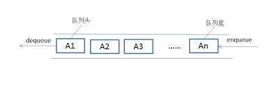

队列
生活中很多时候需要排队来维持秩序，如等公交、取票、办理银行业务等。
队列（queue）是只允许在一端进行插入操作，而在另一端进行删除操作的线性表。
队列是一种先进先出的（First In First Out）的线性表，简称FIFO。允许插入的一端为队尾，允许删除的一端为队头。队列不允许在中间部位进行操作！假设队列是q=（a1，a2，……，an），那么a1就是队头元素，而an是队尾元素。这样我们就可以删除时，总是从a1开始，而插入时，总是在队列最后。这也比较符合我们通常生活中的习惯，排在第一个的优先出列，最后来的当然排在队伍最后。
